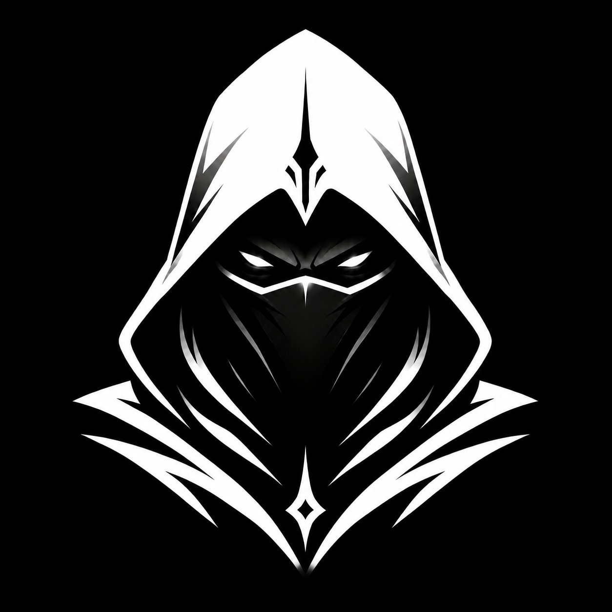
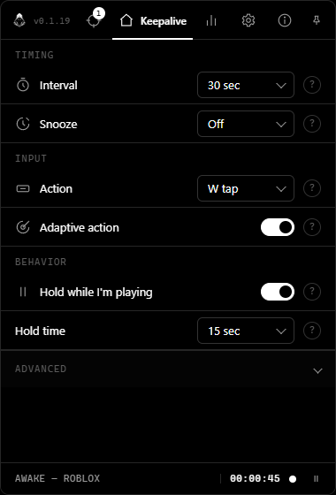
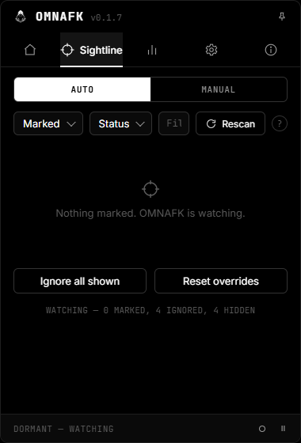
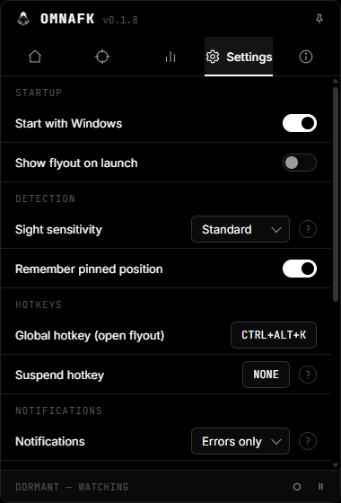
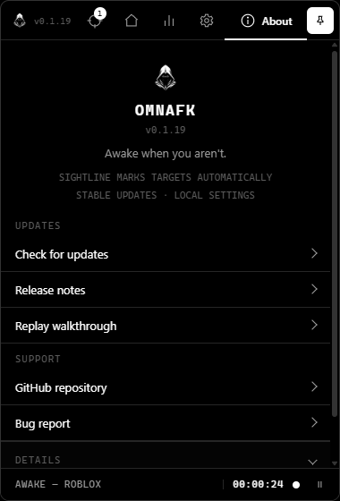
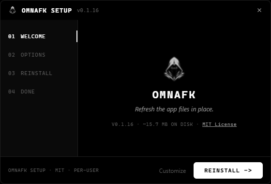

SIGHTLINE
No start button. OMNAFK marks game-like windows, shows why they were detected, and goes dormant when nothing is running.

OMNAFKAwake when you aren't.
A tray-first Windows utility with a quiet Sightline: it marks game-like windows, explains what it sees, learns safe per-game keepalive actions, keeps targets on the monitor you prefer, and returns to dormancy when there is nothing to do.
BEHAVIOR
No start button. OMNAFK marks game-like windows, shows why they were detected, and goes dormant when nothing is running.
Keepalives use background window messages by default, so the app avoids stealing focus from what you are doing.
OMNAFK can learn a small whitelist of keys you actually use per game, then show when that profile is ready.
Marked games can be moved to a preferred display, with per-target overrides and visible placement status.
INSIDE THE APP
OMNAFK lives in the tray, but the flyout gives you the controls that matter: timing, targets, updates, and diagnostics.

Set the keepalive interval, action, random timing, monitor placement, and play-aware pause behavior from the first tab.

See what OMNAFK sees, mark a target, ignore a window, pause a target, and review detection or placement details.

Control launch behavior, notifications, detection sensitivity, update checks, and import/export.

Check for updates, open the repository, report a bug, copy diagnostics, and review license details.
HELP
You do not need to tune everything at once. Install it, let Sightline watch your windows, then adjust only the parts that matter to your setup.
Leave OMNAFK in the tray and open the flyout when you want to check what it sees. If a game appears in Sightline, mark it as a game. If a normal app appears there, ignore it.
The status bar tells you whether OMNAFK is dormant, watching, holding, or ready for the next tick.
NEED TO KNOW
No. Send without focus is on by default, so keepalives use background window messages instead of pulling you away from what you are doing.
No. Space tap is the default action, but adaptive action can learn a small safe key profile for each marked game when there are enough samples.
Open the game window and press Rescan in Sightline. If it still does not appear, report it from About so the issue opens with the right template.
The setup is per-user. If a target app runs elevated, Windows may block normal background input unless OMNAFK is running at the same level.
Settings, target marks, and learned profiles stay local on your machine. Import and export are available from Settings.
Not always. Automated input may not be allowed by every game or platform. Use OMNAFK where it makes sense for you.
FLOW
Sightline checks visible windows and scores likely games.
You can accept the automatic mark, ignore it, or pin your own choice.
If you choose a target monitor, marked games are placed there while active play is protected.
OMNAFK sends the selected quiet action, or a learned per-game action when the profile is ready.
CONTROL
SETUP
Download OMNAFK-Setup.exe, choose whether it starts with Windows, and finish into the tray.
Future stable builds are published through GitHub Releases, and the Settings tab can check updates or open a bug report.
